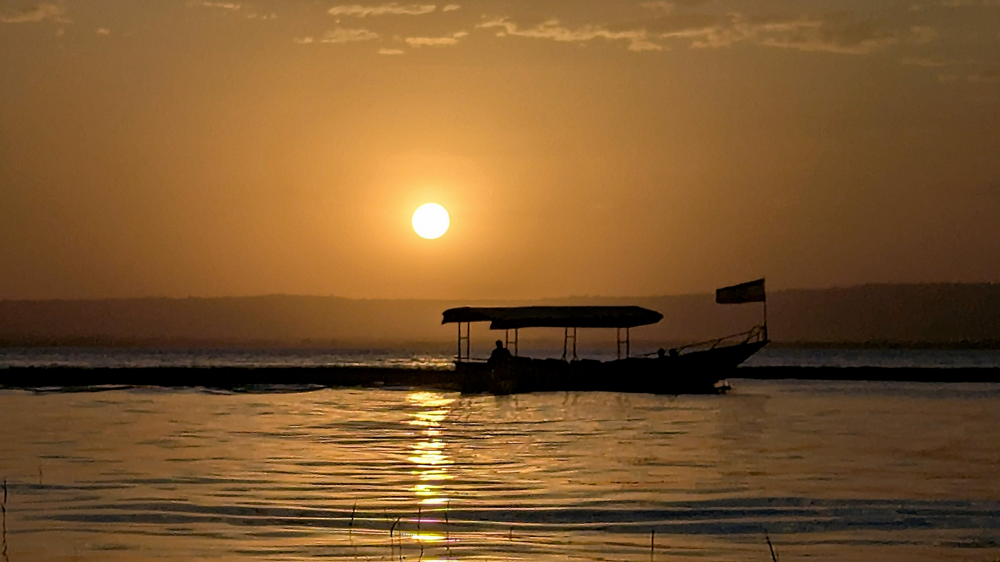
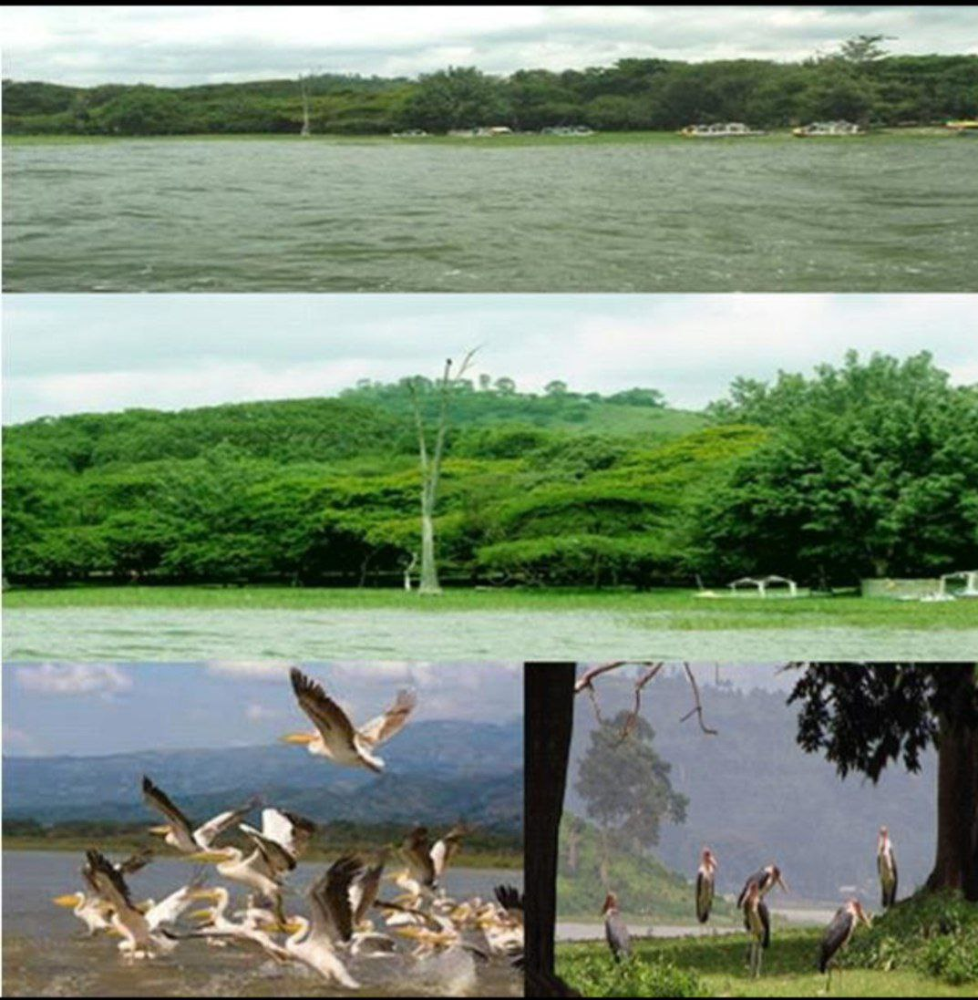
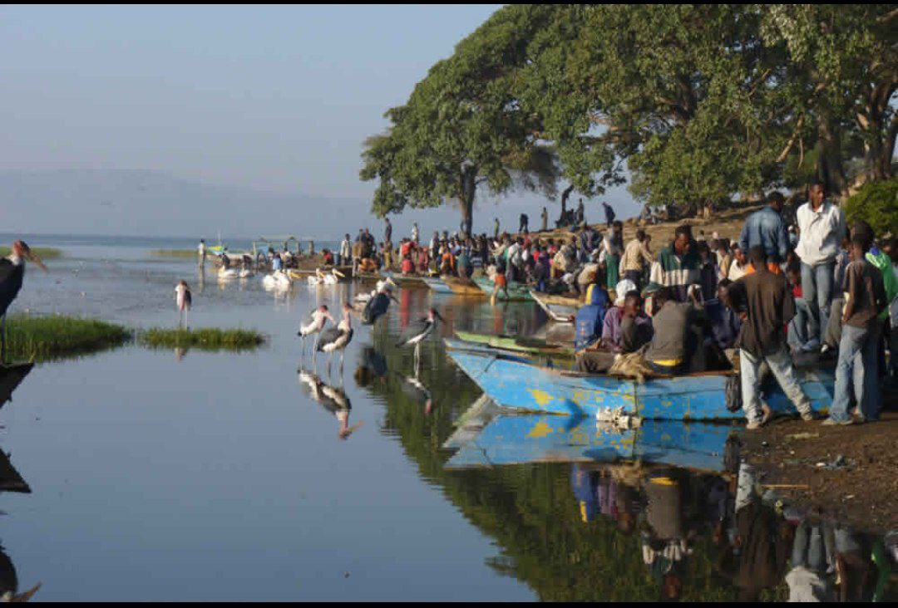
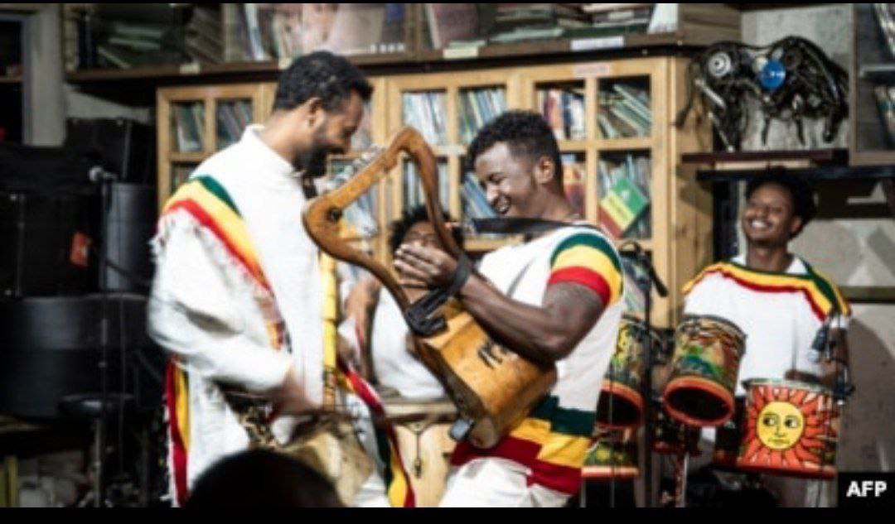
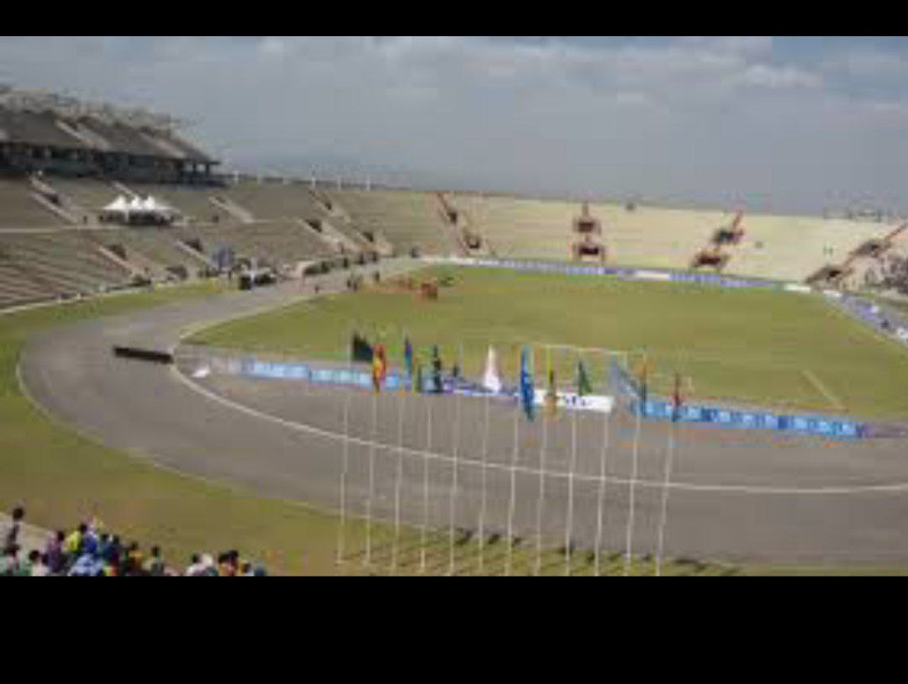
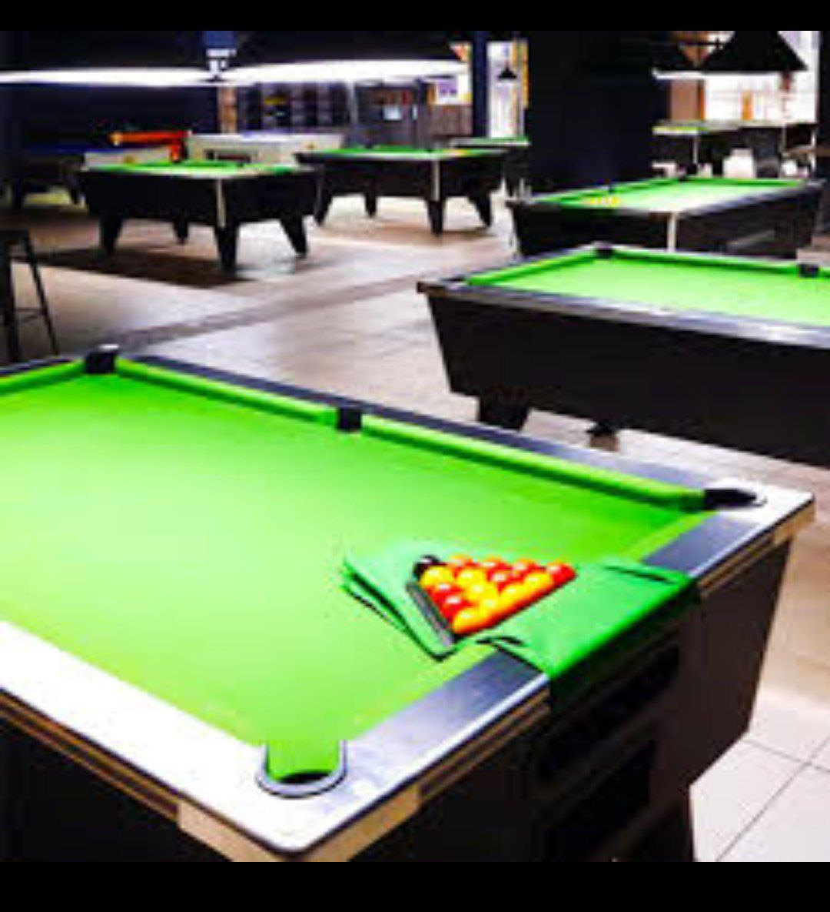
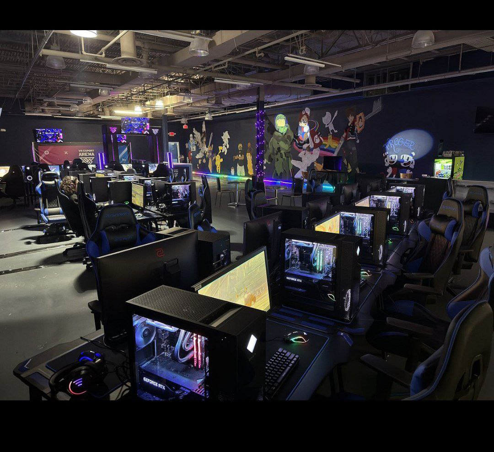
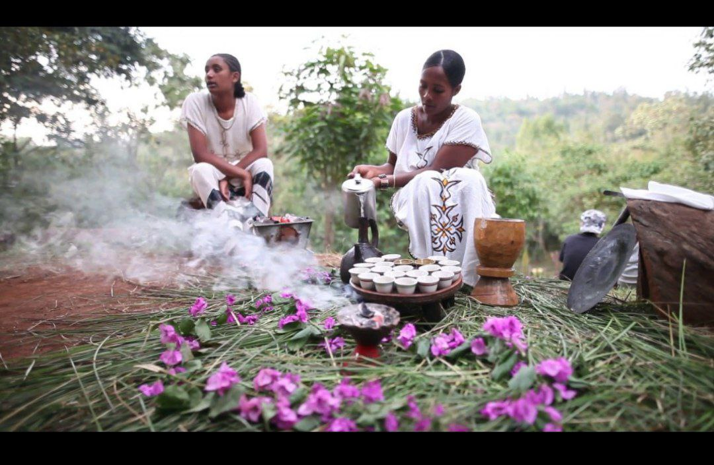
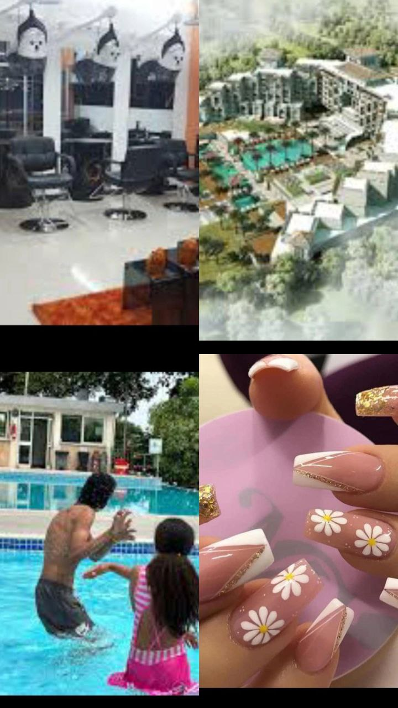
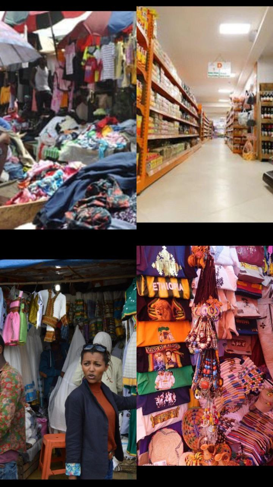

Enjoy a peaceful and refreshing boat ride on the calm waters of Lake Hawassa. Experience beautiful sunsets, gentle breezes, and a relaxing atmosphere perfect for unwinding. Ideal for families, couples, and nature lovers.

Amora Gedel Park is one of Hawassa’s most peaceful natural attractions located along Lake Hawassa. With fresh air, tall trees, and green views, it is perfect for families, couples, and visitors who enjoy relaxing outdoor environments.

This lively lakeside spot in Hawassa captures one of the city’s most vibrant daily scenes. People gather along the shore to enjoy the peaceful morning atmosphere, buy fresh fish, and watch the colorful boats resting on the edge of Lake Hawassa.The large trees provide natural shade while a mix of locals and visitors relax, socialize, and enjoy the cool breeze. Nearby, graceful birds such as marabou storks and pelicans stand in the shallow water, adding to the beauty and natural charm of the place. The image perfectly reflects Hawassa’s warm community life, beautiful lake scenery,and rich connection to nature

A cultural music house in Hawassa showcases Sidama and Southern Ethiopian music, dance, and traditions. Built with natural materials, decorated with cultural art, and filled with traditional instruments, it offers an immersive and lively cultural experience.

Football is one of Hawassa’s most loved sports. Locals gather to watch games, cheer for teams, and enjoy the energetic football culture across community fields, schools, and lakeside open areas.

Many cafes and entertainment centers provide pool tables for fun matches Pool game is a popular indoor recreational activity in Hawassa, enjoyed by students, young adults, and visitors looking for a fun and relaxed environment. The city has several modern pool halls equipped with quality tables, comfortable seating, and friendly staff.

Game zones in Hawassa are lively and entertaining spaces where young people gather to play PlayStation, FIFA, car racing, and other modern video games. These centers are equipped with comfortable seating, large screens, and high-quality consoles that create an exciting gaming atmosphere.They are popular hangout spots for students and friends who enjoy competing, relaxing, and spending time together. Whether you want to challenge someone in a FIFA match, try fast-paced racing games, or simply watch others play, Hawassa’s game zones provide a fun and energetic environment for all gamers.

Coffee shops in Hawassa offer a welcoming and relaxing atmosphere where people come to enjoy fresh, high-quality Sidama coffee. These cafés range from modern and stylish spaces to traditional, cultural setups that highlight Ethiopian coffee heritage. Visitors can enjoy rich aromas, freshly roasted beans, and well-prepared macchiatos, cappuccinos, and traditional jebena buna

Beauty and spa centers in Hawassa offer professional services including massage, skincare, hair treatments, steam baths, manicure, and pedicure—perfect for relaxation and self-care.

shopping in Hawassa offers a mix of modern convenience and local cultural experience. Visitors can explore a variety of places, from small boutiques and clothing shops to open markets and newly developed shopping centers. The city is known for its friendly shop owners, affordable prices, and a wide selection of items such as clothing, shoes, accessories, handmade crafts, and traditional Sidama products. Local markets provide a vibrant atmosphere filled with colorful items, fresh scents, and lively conversations, giving shoppers a true taste of Hawassa’s daily life. Meanwhile, modern shops and malls offer stylish fashion, electronics, and branded goods in a clean and organized environment. Whether you’re looking for trendy outfits, souvenirs, home goods, or locally made items, Hawassa’s shopping spots offer something for everyone